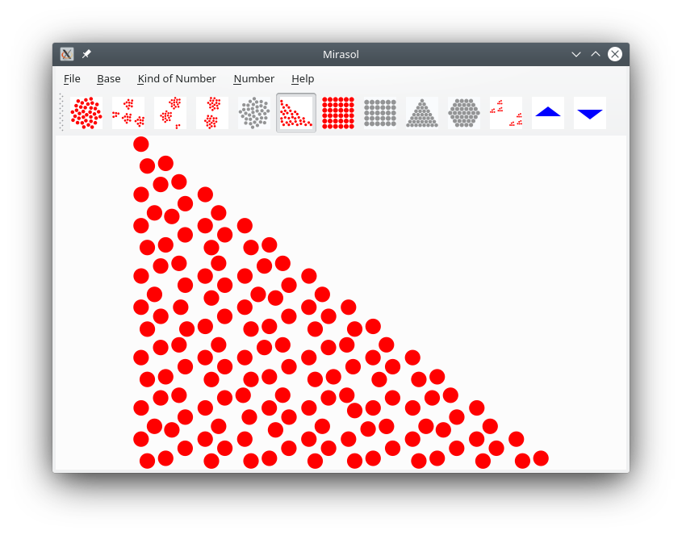

Mirasol is a program for teaching children numbers. Not numerals, numbers. The picture above is the number 144 in a Kepler triangle, which shows that it is a Fibonacci number.
Mirasol displays a number up to 1000 in an asteraceous pattern (the arrangement of sunflower seeds on the head, hence the name) or in base 10 or 16. Depending on which kind of number it is, it can also display the number as composite or prime, or Fibonacci, square, pronic (product of two consecutive integers), triangular, centered hexagonal, or 5-smooth (no prime factors greater than 5). The two buttons at the right increase and decrease the number within the selected sequence.
Download the source code here.